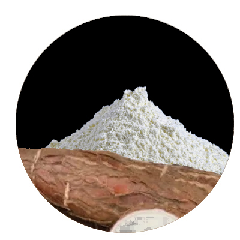

Tapioca starch
Tapioca starch is the starch derived from the roots of the cassava plant, which is native to the northeast regions of Asia. It is widely used in both food and non-food industry.
PROPERTIES:
- Fine powder
- Pleasant taste
- Non-GMO and organic
BENEFITS AND USES:
- Our Tapioca Starch is used as a thickening agent in liquid-based foods like soups, sauces, gravies, and desserts.
- It‘s used to improve the texture and moisture content of burgers, nuggets, and dough by retaining moisture in a gel-like structure and avoiding sogginess.
- Our tapioca is used for making gluten-free bread after combining it with other flours, which makes it extremely useful for people allergic to wheat, grain, or gluten.
- It is a convenient and cost-effective remedy for soothing skin burns and reducing skin itchiness.
- Our tapioca starch can also be used to stabilise emulsions, generate gel textures, and help important components reach the skin.
- Tapioca Starch is used to manufacture bioplastics and can be used in the manufacturing of airbags.
